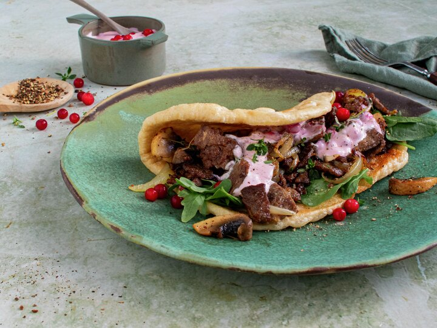

Reindeer kebab

Description
Kebab er superdigg, og med reinsdyrskav får kebaben smaken av
vill, norsk natur! Kjøp noen freshe lefser, eller lag dem enkelt
selv - alt etter hva du har tid til. Litt tyttebærrømme på
toppen, og dette blir vilt godt!
Ingredients
Deig til lefsen:
- 275 g hvetemel
- 1 ts tørrgjær
- 0,5 ts sukker
- 0,5 ts salt
- 1,5 dl lunkent vann
- 25 g romtemperert smør
Kebabfyll:
- 2 stk. frisk sjampinjong
- 0,5 stk. løk
- 400 g reinsdyrskav
- 1 ss smør til steking
- 0,5 ts salt
- 0,25 ts pepper
- 4 stilker frisk timian (kan sløyfes)
Tyttebærrømme:
- 4 ss rømme
- 1 ss tyttebærsyltetøy
Steps
-
Ha mel i en stor bolle. Ha i gjær, sukker og salt. Bland
sammen. Spe vann i deigen, og rør deigen sammen med en sleiv.
Kna den godt sammen med hendene, ca. 5 minutter. Dekk til og
la deigen heve i 20-30 min.
-
Del deigen i 4 emner, og kjevle dem til en tynn leiv. Har du
ikke kjevle, kan du bruke en vinflaske eller oljeflaske.
-
Pensle lefsene med romtemperert smør og stek dem, en etter en,
på middels varme i en stekapanne, ca. 2 minutter på hver side.
Pensle på andre siden før du snur. Hold lefsene varme i et
klede.
- Kutt opp sopp og løk.
-
Stek halvtint reinsdyrskav på høy varme i pannen med litt
smør. Stek gjerne kjøttet i to omganger, slik at det blir
stekt og ikke kokt.
-
Ha kuttet sopp og løk i pannen, stek til det er gyllent, og
krydre med salt, pepper og litt timian, hvis du har.
-
Bland sammen rømme og tyttebærsyltetøy til en frisk dressing.
-
Anrett lefsene på fat, legg på litt salat, og topp med alt det
digge fra pannen, før du har på litt tyttebærrømme.